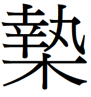

䷮ 困卦 澤水困
困亨，貞大人吉，无咎。有言不信。初六，臀困于株木，入于幽谷，三歲不覿。九二，困于酒食，朱紱方來，利用享祀，征凶，无咎。六三，困于石，據于蒺蔾，入于其宮，不見其妻，凶。九四，來徐徐，困于金車。吝，有終。九五，劓刖，困于赤紱，乃徐有說。利用祭祀。上六，困于葛藟，于臲卼，曰動悔有悔，征吉。
【卦名】
今本：困 歸藏：困 帛書：困 秦簡：囷 清華簡：困 上博簡：困 海昏簡：困
|
象曰：澤無水，困。君子以致命遂志。（圖：小配） |
窮困，山窮水盡。
帛書與歸藏、清華簡、上博簡，以及海昏簡，卦名皆同樣作困。
《說文》：「困，故廬也，从木在囗中。，古文困。」困為故廬，故居的意思。段注解釋認為，困的本義為「止而不過」，引申為極盡的意思，這也是困卦採用的窮困之義：「廬者二畝半一家之居，居必有木，樹牆下以桑是也，故字從囗木。謂之困者，疏廣所謂自有舊田廬，令子孫勤力其中也。困之本義為止而不過，引伸之為極盡。《論語》四海困窮，謂君德充塞宇宙，與橫被四表之義略同。」
困古文作，上止下木，門檻的意思。段玉裁注：「《廣雅》：橜機闑也。按：稚讓用為梱字，此可證四海困窮之義。」依段注，通橜、梱，即門檻。俞樾：「困者，梱之古文也。《木部》：『梱，門橛也。从木，困聲。』困既从木，梱又以木，緟椱無理，此蓋後出字。古字止作困，从囗者，象門之四旁，上為楣，下為閫，左右為根也，其中之木即所謂橜也。」依俞樾之說，困為梱的古文，梱為門橛，門檻的意思，此《說文》「梱」字段玉裁注所說的：「謂當門中設木也。」
王家台秦簡作「囷」，《說文》：「廩之圜者。」即圓形之穀倉，顯然與困卦卦義較難關聯。囷應是困字之誤。
《象傳》：「澤無水，困。」兌卦和坎卦在易象中都是水，為何會說「澤無水」？兌與坎之為水，兩者的屬性並不一樣。坎的卦義是從地洞、地牢的概念而擴展到坎塹、溝瀆等地形，進一步又引申至地上流動的河水，以及水。坎卦的水是一種流動而可變化的水，因此它到天上就變成雲，在地上則成川。兌澤則是作為一個水體，若是在天上，那麼就是傾盆大雨，若在地上則是水澤。困卦因水澤的水漏於下，因此說澤無水。反之，節卦為澤上有水，是水滿溢而應調節。互體離為瓶為容器，兌為毀折，下坎水漏，困為瓶破而水漏之象。
若不局限於《象傳》的註解，困卦說是大水成災亦可，比如當代都市面臨瞬間強降雨，外面大雨，而建物裡面也是下大雨，甚至地鐵或地下道水淹成河，此亦符合困象。
因此，困可以用極端氣候/狀態來理解，都符合窮困之義。乾旱無水是困，水淹成災也是困。就如九二之「困于酒食」，貧窮以致饑寒而無酒食可用是困，過於富裕以至於耽溺於酒食也是困。
兌在上為毀折，是為外患；坎在內為心病，是為內憂，因此困又有內憂外患之象。於人之身體健康，則是內傷外傷同時都遇到了。
卦序上困是繼升卦而來，《序卦》曰：「升而不已必困，故受之以困。」進升到極點，進無可進就是困，窮途末路。困卦又與井卦為相綜的一對卦，困卦水在澤下，澤無水之象；井卦則是水在木上，為木桶汲水，井之象。困為水源枯竭，井卦則是水源不斷。
一般來說，得困卦諸事難成，凡事走投無路。錢財方面不只捉襟見肘，甚至很可能負債破產，窮困潦倒。君子處窮困時要能夠安之若命，明困極而通，否極而泰的盈虛之理，所以《彖傳》說：「險以說，困而不失其所亨，其唯君子乎。」
困境也是考驗君子德行的一卦，《繫辭傳》說：「困，德之辨也。井，德之地也。」又說：「困，窮而通。井，居其所而遷。」窮困之時，正可以看出一個人的操守與修養，君子在窮困的時候能夠堅守節操，因此得以窮中求通，所以卦辭說「困亨，貞，大人吉」。《論語．衛靈公》記載，孔子與弟子「在陳絕糧，從者病，莫能興」，子路憤恨不平地見孔子，問說：「君子亦有窮乎？」孔子回答說：「君子固窮，小人窮斯濫矣。」君子一樣會有窮困的時候，而君子與小人的差別在於，小人處困則可能狗急跳牆，為非而濫行，德操不守。君子則會選擇固守自己的原則。
卦德險以悅也是君子處困之道，孔子困於陳蔡，擊木而歌，可謂險以悅的最佳註解。《莊子．山木篇》：「孔子窮於陳蔡之間，七日不火食，左據槁木，右擊槁枝，而歌猋氏之風，有其具而无其數，有其聲而无宮角，木聲與人聲，犂然有當於人之心。」
窮困的時候除了注意堅守節操之外，應當以謹慎言語為吉，因為吉人之辭寡。而人在窮途潦倒時說的話，既沒份量又只會讓人以為是癡人夢話，因此這時不要試圖說服別人來幫自己擺脫困境，也不要自求口實，否則反而引來罪咎與羞辱，這也是《彖傳》所說的「有言不信，尚口乃窮也」。
困卦爻辭的結構，大致上是上下兩卦對應的爻位彼此呼應的：初與四，二與五，三與上。
| 初六，臀困于株木，入于幽谷，三歲不覿。 | 九四，來徐徐，困于金車。吝，有終。 |
| 九二，困于酒食，朱紱方來，利用享祀，征凶，无咎。 | 九五，劓刖，困于赤紱，乃徐有說。利用祭祀。 |
| 六三，困于石，據于蒺蔾，入于其宮，不見其妻，凶。 | 上六，困于葛藟，于臲卼，曰動悔有悔，征吉。 |
除了這種上下的呼應之外，也有些前後相接的串連：
初六 株（朱）木 － 九二 朱紱
九四 來徐徐，困于金車 － 九五 乃徐有說
九五 劓刖（或作「臲卼」） － 上六，于臲卼
困亨，貞大人吉，无咎，有言不信。
- 《彖》曰：困，剛揜也。險以說，困而不失其所亨，其唯君子乎。貞大人吉，以剛中也；有言不信，尚口乃窮也。
- 《象》曰：澤无水，困。君子以致命遂志。
- 《繫辭》：「困，德之辨也。井，德之地也。」「困，窮而通。井，居其所而遷。」「困以寡怨，井以辨義。」
- 《序卦》：升而不已必困，故受之以困。困乎上者必反下，故受之以井。
- 《雜卦》：井通而困相遇也。
- 《謬和》：謬和問於先生曰：「凡生於天下者，无愚知賢不宵，莫不願利達顯榮。今《周易》曰：困，亨，貞大人吉，无咎。又言不信。敢問大人何吉於此乎？」子曰：「此聖人之所重言也。曰又言不信，凡天之道，壹陰壹陽，壹短壹長，壹晦壹明。夫人道叴之， 是故湯囚而王，文王絇於條里，秦［繆公困］於［殽，齊桓公］辱於長勺，戊王句賤困於［會稽］。晉文君困［於］驪氏。古古至今，柏王之君，未嘗憂困而能［□］甘美亞不［□□］也。夫困之為達＜道＞也，亦猷寒之及煖，煖之及寒也。唯賢者獨知而難言之也。故易曰：困，亨，貞大人吉，无［咎，又言不信。此］之胃也。」
窮困而能嘉會合禮，問於大人則吉而沒有罪咎。這時候所說的話無法讓人相信。
或讀作「困亨，貞，大人吉」。
傳統註解將貞解釋為正，言窮困中仍有亨通之道，那就是堅守節操，只有君子、大人能夠如此，自求亨通之後方吉而沒有罪咎。反之，小人則凶。
窮困的時候，所說的話恐怕讓人無法相信，君子此時言語應當更加謹慎，若只會用嘴巴解決問題，將萬劫不復，那才是真的窮困，所以《彖傳》說「尚口乃窮」。
卦辭與師卦很像，師卦「師貞丈人吉」傳統有兩種讀法，《彖傳》讀作「師貞，丈人吉」，解釋為眾正，丈人乃吉。鄭玄引鄭司農：「貞，問也。《易》曰：『師，貞丈人吉。』問於丈人。《國語》曰：『貞於陽卜。』」雙鄭以「貞丈人」連讀，貞為問卜，引申為「問」，言問於丈人乃吉。
「困亨貞大人吉」《彖傳》注解說：「貞大人吉，以剛中也。」雖然像是將「貞大人」連讀，但從後文「剛中」的注解來看，仍是把貞理解為「正」，言守正之大人乃吉。依鄭司農註解師卦例，「貞大人吉」意思為問於大人乃吉。
孔穎達：困者，窮厄委頓之名，道窮力竭，不能自濟，故名為困。亨者，卦德也。小人遭困，則窮斯濫矣。君子遇之，則不改其操。君子處困而不失其自通之道，故曰「困亨」也。處困而能自通，必是履正體大之人，能濟於困，然後得吉而无咎。處困求濟，在於正身脩德。若巧言飾辭，人所不信，則其道彌窮，故誡之以有言不信也。
【字義】
《象傳》致命遂志：一說以命為生命，致命為用生命來守道，孔穎達：「君子之人，守道而死，雖遭困厄之世，期於致命喪身，必當遂其高志，不屈撓而移改也，故曰致命遂志也。」二說以命為天命或命令，致命為委任天命或命令，如朱熹：「致命，猶言授命，言持以與人而不之有也，能如是則雖困而亨矣。」馮當可：「君子之處困也，命在天而致之，志在我則遂之，困而安於困者，命之致也。困而有不困者，志之遂也。」何楷：「致，猶委也。......今一委之命，則不以命貳志者，夫且能以志立命。」
初六，臀困于株木，入于幽谷，三歲不覿。
《象》曰：入于幽谷，幽不明也。
屁股困於枯木中，進入幽深的山谷裡，歷經三年都無法見到人。
初六處於坎之最深處，坎為谷，故曰入于幽谷。
朱熹：困于株木，傷而不能安也。
坎上六：「係用徽纆，寘于叢棘，三歲不得，凶。」豐上六：「上六，豐其屋，蔀其家，闚其戶，闃其无人，三歲不覿，凶。」
【字義】
臀：音屯，屁股。屁股可讓人坐下休息，臀困比喻人不得安歇、休息，有如大壯及夬卦說「臀無膚」，皆有不得安歇之義。朱熹：「臀，物之底也。困于株木，傷而不能安也。」干寶：「兌為孔穴，坎為隱伏。隱伏在下而漏孔穴，臀之象也。」帛書作「辰」，《說文》：「辰，震也。三月陽气動，靁電振，民農時也。」辰為震動的意思，震困於株木，欲動而困於株木。
株木：枯木的樹頭。《說文》：「株，木根也，从木朱聲。」木根即樹頭，株木為只剩樹頭的枯木。原本入於幽谷該有樹林掩蔽，剩樹頭的枯木則無以為蔽，窮困之極。《九家易》：「株木，三也。三體為木。澤中无水，兌金傷木，故枯為株也。」孔穎達：「杌木謂之株也。」杌木即沒有枝條的斷木。《莊子．達生》「吾處身也，若厥株拘；吾執臂也，若槁木之枝」郭璞注：「枸，根盤錯也。《說文》：株，木根也。徐鉉曰：在土曰根，在土上曰株。株枸者，近根盤錯處；厥者，斷木為杙也。身若斷株，臂若槁木之枝，皆堅實不動之意。」程頤：「株木，无枝葉之木也。」或以株木為杖刑，李鏡池、高亨、鄧球柏等當代學者持此說。高亨：「杖以株木為之，故謂之株木。」此說有問題，高亨引《莊子．列禦寇》：「為外刑者，金與木也。」及郭注：「金，謂刀鋸斧鉞；木，謂捶楚桎梏。」所引古文沒有以株木行杖刑的，因此不足為證。古代與杖刑最近者，《尚書．舜典》：「象以典刑，流宥五刑。鞭作官刑，扑作教刑，金作贖刑。」扑通朴、撲，屬於輕刑，常與鞭通稱。扑刑以槄木或荊為之，未聞以株木為之者。《禮記．學記》「夏、楚二物，收其威也」鄭注：「夏，槄也。楚，荊也。二者所以扑撻犯禮者。收，謂收斂整齊之。」孔穎達：「學者不勸其業，師則以夏、楚二物以笞撻之。所以然者，欲令學者畏之，收斂其威儀也。《爾雅．釋木》云：槄，山檟。郭景純云：今之山楸。盧氏云：扑作教刑。是扑撻犯禮者。」
入于幽谷：幽，深。幽谷，深山野谷。入于幽谷，進入了深山野谷，王弼解讀為「隱遯」：「居則困于株木，進不獲拯，必隱遯者也。」程頤解讀為入於深暗之所，喻指人越陷越深：「既不能免於困，則益迷暗妄動，入於深困。幽谷，深暗之所也。」《象傳》「幽不明也」於文義較接近程頤的解讀。或有以「幽谷」為監獄者，李鏡池、高亨、鄧球柏等當代學者持此說。因幽有幽禁之義，如履卦的「幽人貞吉」及歸妹「利幽人之貞」，虞翻以「幽人」為犯人，即遭囚禁之人，履：「訟時二在坎獄中，故稱幽人。」虞翻並以坎為幽為獄，歸妹九二注：「二在坎中，故稱幽人。」噬嗑卦，以及賁、旅、中孚《象傳》，坎卦上六，皆曰：坎為獄。
三歲：三年，喻多年，很久，並不一定指三年。《周易》中關於三年或稱「三年」，或稱「三歲」。若言「三年」者，則事可成，如既濟九三「高宗伐鬼方，三年克之」，未濟九四「震用伐鬼方，三年有賞于大國」。稱「三歲」者則事不可成，或為凶，如坎上六「三歲不得，凶」，困初六「入于幽谷，三歲不覿」，漸九五「鴻漸于陵，婦三歲不孕」，豐上六「三歲不覿，凶」。至於十年者則無此別，皆曰「十年」，多數偏凶，如屯卦六二「女子貞不字，十年乃字」，復上六「至于十年不克征」，頤六三「十年勿用，无攸利」。為何「三年」與「三歲」會有吉凶上的差別？《爾雅》：「載，歲也。夏曰歲，商曰祀，周曰年，唐虞曰載。」夏習慣稱歲，周習慣稱年，此說不能解釋《周易》為何以三年為吉，三歲為凶。《說文》：「年，穀孰也，从禾千聲。《春秋傳》曰：大有年。」「歲，木星也，越歷二十八宿，宣徧陰陽，十二月一次。从步戌聲。《律曆書名》：五星為五步。」年原本是指每年的五穀成熟，而歲則是木星，木星大致上每十二年繞太陽一周，因此用以紀年，並可與十二地支系統相接。「三歲」在《詩經》出現六次，〈氓〉「自我徂爾，三歲食貧」、「三歲為婦，靡室勞矣」，〈采葛〉「彼采艾兮，一日不見，如三歲兮」，〈碩鼠〉「三歲貫女，莫我肯顧」、「三歲貫女，莫我肯德」，「三歲貫女，莫我肯勞」。「三年」則只有〈東山〉「自我不見，于今三年」一次。但是「年」字經常用作代表吉祥的「萬年」。似乎年與歲在《詩經》中也有吉凶的不同象徵，今人的「太歲」信仰，似乎也有以歲星為凶星的習俗，或許與《周易》三歲則凶有關。
覿：音狄，見也。三歲不覿，三年不見，言三年裡都見不到其人。窮困之極。三歲就是幾年的意思，不一定是三歲。三年不見，另一意思為，再過幾年才可以脫困。《周易古占筮法》以覿音義同覩，不正確。
九二，困于酒食，朱紱方來，利用享祀。征凶，无咎。
《象》曰：困于酒食，中有慶也。
困於酒肉飲食，祭祀所用的朱色儀服才剛送到，宜於祭祀。若是進取而出征，凶，无咎。
圖說→：紱為祭祀時所穿的蔽膝，現今台灣廟宇中法師道士在舉行祭祀時仍可看到。圍於腰間的繡龍紅布即是紱。
與九二對應的九五曰「困于赤紱」。朱與赤同為紅色，但朱為正色，即《說卦傳》說「乾為大赤」的「大赤」，赤則色有雜（坎為赤）。鄭玄：「朱深云赤。」紱即巿，祭祀時所穿的蔽膝。朱紱為天子之祭服，九五的赤服則是諸侯或大夫之祭服。朱紱方來引喻文王之將興。
九二爻為否卦乾卦上爻而來，故曰「朱紱方來」。
《乾鑿度》引孔子曰：
紱者所以別尊卑，彰有徳也。故朱赤者，盛色也。是以聖人法以為紱服，欲百世不易也。故困九五，文王為紂三公，故言困於赤紱也。至於九二，周將王，故言朱紱方來，不易之法也。
赤紱者，賜大夫之服也。文王方困，而有九二大人之行，將錫之朱紱也。其位在二，故以大夫言之。至於九五，劓刖，不安也。文王在諸侯之位，上困於紂，故曰困於赤紱。
西周青銅器銘文經常可見周王賜臣朱巿與金車者，如《毛公鼎》，周宣王賜父瘖朱市、玉環、玉瑹、金車......等物。唐蘭認為，巿不一定作為祭服，亦有作為命服、朝服者。〈毛公鼎「朱韍、蔥衡、玉環、玉瑹」新解〉：「西周金文常有賞『巿』的記載......《玉藻》的『君朱』，就是《周易》的『朱紱』......《詩經．采芑》『服其命服，朱芾斯皇』，是方叔率領軍隊南征時所穿的。「命服」。《車攻》『赤芾金舄，會同有繹』，是諸侯們朝周王時所穿的。可見，『韍』不一定是祭服。」
【字義】
困于酒食：有多種解讀。一、處困而能飲食豐盛，王弼：「履中則不失其宜，无應則心无私恃，以斯處困，物莫不至，不勝豐衍，故曰困于酒食，美之至矣。」蘇軾則解讀為酒食有餘以懷小人：「方其見揜也，爭之以力，雖刀鋸有不足，而將懷之也，則酒食有餘矣。故九二困于酒食，所以懷小人也。」二、飲食宴樂，縱慾過度而為所困。朱熹：「困于酒食，厭飫苦惱之意。酒食，人之所欲，然醉飽過宜，則是反為所困矣。」俞琰：「九二雖在困中，而不失其所守，但以醉飽過傷而反為酒食所困耳。」三、因窮困而酒食匱乏。程頤：「酒食，人所欲而所以施惠也。二以剛中之才而處困之時，君子安其所遇，雖窮戹險難，无所動其心，不恤其為困也。」來知德：「言酒食之艱難窮困也。如孔子之疏食飲水，顏子之簞食瓢飲，儒行之并日而食是也。酒食且困，大于酒食者可知矣。《程傳》是。」四、承上，引申為食祿不足以為用，為飲食所困。鄭玄：「困于酒食者，采地薄，不足己用也。」《乾鑿度》：「困于酒食者，困于祿也。」《象傳》：「困于酒食，中有慶也。」似乎意謂有喜慶宴會，而飲食過度，酒喝太多，吃太飽。
紱：紱，音服，祭服，祭祀所穿的蔽膝，通巿、芾、韍、韠。《禮記》作「韍」，《詩經》作「芾」，紱為後出的俗體字。豐卦九三「豐其沛」子夏傳作「豐其芾」，上博簡作「豐丌芾」。《說文》：「巿，韠也。上古衣蔽前而已，巿以象之。天子朱巿，諸侯赤巿，大夫葱衡。从巾，象連帶之形，凡巿之屬皆从巿。（韍），篆文巿，从韋从犮。分勿切。」徐鉉注：「今俗作紱，非是。」依徐鉉，紱為後出的俗字，並非本字。鄭玄作「韍」，九五「困于赤紱」，《禮記》有「赤韍」，可為證。
方：有多種解釋。一、方才。朱紱方來，天子祭衣始來。《廣雅．釋詁一》：「方，始也。」二、方也可解釋為當，朱紱方來，言天子祭服當來。三、方國。方在《周易》中或解釋為方國、地方，如既濟鬼方。王弼以方為地方，「朱紱方」為異方、遠方。卜辭中方作為方國、地方、方向，並常有「某方來」，言某某方國來。朱紱方來，名為「朱紱」的方國來了。四、某種忌祀。卜辭中常見「方帝」、「勿方帝」，帝為天帝，方疑為某種祭祀儀式。五、屈萬里：「方，旁也，並也。」朱紱方來，朱紱並來。
朱紱方來：朱為純赤，為天子之色。《說文》巿字：「天子朱巿，諸侯赤巿。」朱紱為天子之祭服，九五的赤紱為諸侯之祭服。鄭玄以為「朱紱方來」是文王之受命將王：「文王將王，天子制用朱韍。朱深云赤。」王弼以九二居坎中，為北方，朱色為南方，自南方而來的祭祀服裝，意謂能夠引來遠方的相助：「坎，北方之卦也。朱紱，南方之物也。處困以斯，能招異方者也，故曰朱紱方來也。」
享祀：指向天地鬼神貢獻食物，也就是祭祀。前言朱紱方來，既然祭祀的服裝已從遠方送來，那麼理當開始祭祀。《周易集解》作「亨祀」，義同，古亨通享。
六三，困于石，據于蒺蔾。入于其宮，不見其妻，凶。
《象》曰：據于蒺蔾，乘剛也。入于其宮，不見其妻，不祥也。
《繫辭》：易曰：「困于石，據于蒺蔾，入于其宮，不見其妻，凶。」子曰：非所困而困焉，名必辱；非所據而據焉，身必危，既辱且危，死期將至，妻其可得見耶？
受困於堅硬的石頭，所賴以據守的是有刺而傷人的蒺蔾。進入他的宮室，但見不到妻子，凶。
磐石堅固，可賴以防禦，豫六二「介于石」，言以石為防衛，即據于石。今反為石所困，即孔子說的「非所困而困焉」。蒺蔾為有刺植物，用以困人傷人，反以為據，即孔子說的「非所據而據焉」。此為倒行逆施，太阿倒持，孔子評曰：「既辱且危。」
不見其妻為大凶，不祥之兆。《繫辭傳》孔子解釋此爻：「既辱且危，死期將至，妻其可得見耶？」《象》曰：「入于其宮，不見其妻，不祥也。」不見其妻，是因為死期將到。
《左傳》襄公二十五年記載，崔武子筮得「困之大過」，即困卦六三爻變，為大凶，但崔武子仍執意娶剛喪夫的棠姜，之後因此造成了兒子與妻舅之間的不和與惡鬥，讓政治死敵慶封得以利用他們之間的矛盾而滅了崔家，崔武子最後因此家破人亡而自殺，齊國的崔氏從此滅亡。
「蒺蔾」即茨。茨，音瓷。爻辭後半言「入于其宮，不見其妻」，此或暗喻夫妻之關係，此典故或與《牆有茨》暗諷的故事相似。《詩序》：「《牆有茨》，衞人刺其上也。公子頑通乎君母，國人疾之，而不可道也。」公子頑為衛宣公兒子，衛宣公為太子「公子伋」娶宣姜，見宣姜美而據為己有，宣姜後來為宣公生下兩個兒子，還殺害了公子伋。衛宣公死後，公子頑又娶了後母宣姜，宣姜又為公子頑生下三子二女。依《詩序》，《牆有茨》是衛國人諷刺此亂倫醜事而作：
牆有茨，不可埽也。中冓之言，不可道也。所可道也，言之醜也。
強有茨，不可襄也。中冓之言，不可詳也。所可詳也，言之長也。
牆有茨，不可束也。中冓之言，不可讀也。所可讀也，言之辱也。
毛注：「牆，我以防非常。茨，蒺藜也，欲埽去之，反傷牆也。」鄭箋：「國君以禮防制一國，今其宮內有淫昏之行者，猶牆之生蒺藜。」中冓，即內媾，宮內交媾淫亂之事。
言「蒺蔾」不言「茨」者，「蒺」者「疾」也。
【字義】
蒺蔾：一種帶刺的植物，或用於防衛，或用於圜土（監獄）圍困犯人。據于蒺蔾，拿困人及傷人的蒺蔾作為依靠保護，為太阿倒持，危險不在話下，所以孔子說「非所據而據焉，身必危」。虞翻：「蒺蔾，木名。坎為蒺蔾。」孔穎達：「石之為物，堅剛而不可入也。蒺蔾之草，有刺而不可踐也。」程頤：「石，堅重難勝之物。蒺蔾，刺不可據之物。」蔾，或作藜。《爾雅》：「茨，蒺蔾。」
宮：指宮室。原本這是人安居的地方，但回到自己的房裡，卻見不到自己的妻子，大難已經臨頭，死期將到。
【卦例】
《左傳》襄公二十五年，棠公死，崔武子去弔唁時看上棠姜美色而想娶她，剛好棠姜的弟弟東郭偃是他的家臣，於是託東郭偃幫忙娶棠姜。東郭偃以兩人同姓為由勸退崔武子，於是崔武子筮了一卦，遇「困之大過」，即困卦六三爻變，為家破人亡的大凶之卦，但崔武子不顧凶象仍娶棠姜為妻。
崔武子娶了棠姜之後因此造成了兒子與妻舅之間的不和與惡鬥，讓政治死敵慶封得以利用他們之間的矛盾而滅了崔家，崔武子最後因此家破人亡而自殺。自此之後，齊國的崔氏滅亡。
九四，來徐徐，困于金車，吝，有終。
《象》曰：來徐徐，志在下也。雖不當位，有與也。
遲疑而徐緩地來，困於剛堅的金車。悔恨，但總算可以有好的結果。
西周青銅器銘文可見周王賜臣朱巿與金車者，如《毛公鼎》，周宣王賜父瘖朱市、玉環、金車......等物，裡面也包含了許多的車器，如「金甬」（可能是車鈴一類的）。
李光地：來徐徐者，喻君子當困時，不欲上進也。困于金車者，招我以車，不容不來也，如是則可羞吝矣。然上近九五之剛中正，乃卦所謂大人者，與之同德，終有亨道。
【字義】
徐徐：舒緩、遲緩貌，因金車受困所以遲遲才來。《說文》：「徐，安行也。」馬融：「徐徐，安行貌。」徐本是安行的意思，引申為舒緩，虞翻：「來欲之初。徐徐，舒遲也。見險，故來徐徐。」王弼解釋為疑懼貌：「徐徐者，疑懼之辭也。」《釋文》：「徐徐，疑懼貌。馬云：安行貌。《子夏》作荼荼，翟同。荼，音圖，云內不定之意。王肅作余余。」荼在此可作二解：一、通舒，舒舒通徐徐，亦有舒緩、疑懼義。《禮記．玉藻》「諸侯荼」鄭玄註：「讀為舒遲之舒。舒懦者，所畏在前也。」《荀子．大略》「諸侯御荼」楊倞註：「古舒字。」二、荼為苦菜，引申為荼毒，荼荼則為苦懼貌。
金車：金屬的車子，指的可能是兵車，或是以大量的銅為裝飾的華麗車子。金，喻指剛強，兌為金，故曰金。兵車受困，因此救兵遲遲無法趕到。《釋文》：「金車本亦作金輿。」金之象除了取自兌卦之外，另有二說：一是以九二陽剛為金，王弼：「金車，謂二也。二剛以載者也，故謂之金車。」何氏：「九二以剛德勝，故曰金車也。」二、《說卦》「乾為金」，虞翻：「否乾為金，乾為車。」虞翻以卦變註解，困為否卦而來，困九二原為否卦上九。否上卦乾的上爻，下於二而成困。唐蘭〈中國青銅器的起源與發展〉：「這種到處用銅作裝飾的車子，稱為金車。」
九五，劓刖，困于赤紱。乃徐有說，利用祭祀。
《象》曰：劓刖，志未得也；乃徐有說，以中直也；利用祭祀，受福也。
割鼻又斷腿，紅色祭服無法送達。若能徐緩行之，則能脫困，利於祭祀祈福。
赤紱為祭服，困于赤紱則祭祀無法進行，將不受福祐，因此有凶象。前言劓刖，為使用嚴苛的刑罰，越是要下猛藥，卻越無法達到目的，欲速則不達，因此而讓祭服沒有準時送到。後言若是能改變做法，徐緩行之，則能夠讓祭祀順利進行，祈求福祉。
依唐蘭，赤紱也可能是天子所賜的命服或朝服。《禮記．玉藻》：「一命縕韍幽衡，再命赤韍幽衡，三命赤韍蔥衡。」
九五與九二兩爻上下呼應，九二言朱紱方來，利用享祀；九五言困於赤紱，利用祭祀。朱紱為天子之祭服，赤紱為諸侯祭服。為何九五君位言赤紱，九二臣位言朱紱？九五的赤紱指的可能是其對應的九二，反過來，九二所言的朱紱則是對應的九五。虞翻：「赤紱謂二。」《乾鑿度》則以九二為文王將興，故曰「朱紱方來」。而九五喻指文王為商紂之三公而受困。詳論見九二注。
【字義】
劓刖：分別為割鼻和斷腳的刑罰。割鼻則被傷於上，斷腿則被傷於下，此言上下皆受到傷害。劓，音意，割鼻的刑罰。刖，音月，斷腿的刑罰。虞翻：「割鼻曰劓，斷足曰刖。四動時震為足，艮為鼻。離為兵，兌為刑。故劓刖也。」程頤：「截鼻曰劓，傷於上也。去足為刖，傷於下也。上下皆揜於陰，為其傷害，劓刖之象也。」《釋文》：「荀王肅本劓刖作臲，云不安貌。陸同。鄭云：劓刖當為倪。京作劓劊。案：《說文》：劊，斷也。」依《釋文》，漢時「劓刖」可能與上六同樣作「臲卼」。今本九五「劓刖」以及上六「臲卼」帛書皆作「貳椽」。貳，副、益也。椽為屋樑上承受屋頂的木條，圓曰椽，方曰桷，漸卦六四「鴻漸于木，或得其桷」。貳椽，不知何義。
乃徐有說：徐緩則可脫困。徐，舒緩，詳見九四來徐徐注。說，脫也。傳統說解釋為悅，如孔穎達註《小象》：「乃寬緩修其道德，則得喜說。」崔憬：「以其居中，當位，故有悅。」程頤：「是始困而徐有喜說也。」但《周易》經文「說」字皆作「脫」用：蒙初六「用說桎梏」，小畜九三「輿說輻」，大畜九二「輿說輹」，遯六二「執之用黃牛之革，莫之勝說」，睽上九「先張之弧，後說之弧」。以說為悅，是受十翼所影響，十翼中「說」字大致上皆用作「悅」。
困于赤紱：赤紱，諸侯之蔽膝祭衣。困于赤紱，或喻指文王之困于羑里。詳解見九二。虞翻：「赤紱謂二。否乾為朱，故赤。坤為紱，二未變應五，故困於赤紱也。」虞翻以困卦為否卦而來，否卦上六降至二成困。上乾為大赤。
利用祭祀：《釋文》：「祭祀，本亦作享祀。」帛書作「利用芳祀」，帛書芳假借為享。九二作「利用享祀」或「利用亨祀」。
上六，困于葛藟，于臲卼，曰動悔有悔，征吉。
《象》曰：困于葛藟，未當也；動悔有悔，吉行也。
困於葛藟藤蔓之中，又困於讓人不安的高危險地。行動之後悔悟再悔悟，出征為吉。
困於藤蔓之纏繞而無法活動，又處於高處而危險之地。然而窮則變，變則通，如果能因此謀慮而後動，化被動為主動，勇敢出征則吉。上六為窮極而變之時，當以主動積極而突圍，出征為吉。
葛蕾傳統認為是藤蔓而纏繞之草，比喻人之難以脫困。虞翻則以此爻講的是刑罰之事：「兌為刑人。故困于葛藟，於臲卼也。」
《詩經》中有許多與葛蕾相關的詩，葛藟似乎讓人聯想到「蔓延」和「依附」，並發展為兩種引喻：一是子孫之綿延；二是后妃之有儀。但子孫必需依附於先祖之基業，如《文王之什．旱麓》「莫莫葛藟，施于條枚」；后妃則是依附於巍巍夫君，如葛藟之附於南方樛木，《樛木》：「南有樛木，葛藟纍之。樂只君子，福履綏之。
再從這樣的引喻來看，那麼「困於葛藟」似有兩種可能引喻：一是子孫無以繁衍，或者無所依附；二是后妃不利於夫家，成為牽纏夫家的羈絆。
以上詳論可再參考〈用《詩經》解讀困卦上六「困于葛藟」〉
與上六對應的六三曰「困于石，據於蒺蔾」，以喻夫妻關係之不倫而相傷。由此推論，葛蕾比喻的也很可能是夫妻關係。困于葛蕾，言后妃之不嫻，原本依附於夫家，今反纏束夫家使其受困。
【字義】
葛藟：當代研究有二說，一、葛蕾為野生葡萄，屬葡萄科植物，又叫葛藟葡萄，在台灣叫光葉葡萄，果實可入藥，據說有潤肺止咳，清熱涼血的功效。二說以藟為藤蔓，葛藟即葛藤。藟，音壘。孔穎達：「葛藟，引蔓纏繞之草。」
臲卼：音「孽勿」，動搖不安，因處於高處而危險不安的樣子。孔穎達：「臲卼，動搖不安之貌。」《說文》作 ，出部：「， ，不安也。《易》曰： 。」段玉裁注：「一本作埶，非也。困上六『于臲卼』，《釋文》云：『臲，《說文》作㓷。卼，說文作。云：，不安也。陸云《說文》作㓷，與今本不同。小徐本作『《易》曰：劓，困于赤芾。』劓字與陸氏合，而多困于赤芾四字，則為九五爻辭，又不與陸合。鍇注仍引上六爻辭，恐四字淺人所增也。九五劓刖，荀、王作臲。鄭云：劓刖當為倪㐳。則兩爻辭義同矣。許作，蓋孟易也。」
動悔有悔：孔穎達：「必須發動其可悔之事，令其有悔可知，然後處困求通，可以行而獲吉。」《日講易經解義》：「若能翻然振作，興起悔悟之思，以改其因循之習。力反而征行則明作有功，而吉可知矣。」王引之認為，有讀為又：「曰，思謀之辭也。言將何以通至困乎？曰：動悔合生有悔，以征則濟矣。」
【彖傳】
《彖》曰：困，剛揜也。險以說，困而不失其所亨，其唯君子乎。貞大人吉，以剛中也；有言不信，尚口乃窮也。
困，剛揜也：窮困是因為陽剛之氣（君子）受到蒙蔽壓抑。能夠在這個時候面對危險而歡喜以對（險而悅），窮困而還能夠求通的，只有君子。揜，通掩，言剛爻受到遮蔽，可能指九二或九五，九二剛爻坎陷於中，九五為上六所乘。困卦是由否卦卦變而來，否上九降至二，六二升上。因此剛揜比較可能是說九二，言否卦上九至二而坎陷，即剛揜。
險以說：以上下二體卦德解釋卦義。下坎為險，上兌為說。
貞大人吉，以剛中也：九二剛中。
有言不信，尚口乃窮也：受人言語毀謗而無以取信於人，此時不應當以言說（尚口）來解決問題，只會越描越黑，因此說尚口乃窮。虞翻：｢兌為口，上變口滅，故尚口乃窮。｣坎為言，而兌為說。言指的是壞話，受人毀謗。兌為言說，溝通。